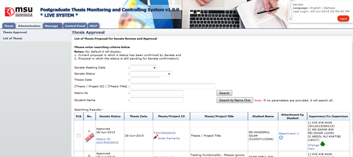
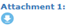

Thesis Approval
All process to approve/disapprove, view, assign or cancelation are being listed on the Left panel.

Figure 57: Thesis Approval
Steps:-
- Click on the Administration tab on the system Top panel section.
- The Administration menu will be displayed on the system Left panel and click on it.
- Click the Thesis Approval and the searching page will be displayed which the user can search for a particular thesis for review. It will list the entire thesis that already been approved by the Faculty.
- Choose the Senate Meeting Date or Senate Status or Thesis Date or by inserting Thesis ID/Thesis Title or Matrix No all criteria above and click Search button.
- The record will be displayed under the search result.
- Alternatively, the Thesis Proposal can be searching via Student Name by entering the student name.
- Click Search by Name Only button and the record will be displayed under the search result.
- To change Supervisor/Co-supervisor, click . To view Supervisor/Co-supervisor that has been assigned, click
 .
.
- To download and view the attachment that has been uploaded by student, click .
Created with the Personal Edition of HelpNDoc: Free EBook and documentation generator